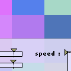
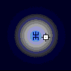

:
junk :
:
junk :
ixi Junk
FishTank:
Thousands of small pieces flocking around. Create different situations
and enjoy the movement.
>> Launch 190k. Shockwave 8.5 required
StarLight :
Sines, tangents... some maths applied to the creation of visual animations.
>> Launch 5k. Shockwave 8.5 required
3D Flight :
More maths applied to 3D space.
>> Launch 25k. Shockwave 8.5 required
----------------------
some apps :
Cutter
|
||||||
Layers
|
||||||
Micromog
|
||||||
Tracker
|
||||||
Grid
|
||||||
----------------------
ixi Sketches
Here you will find a series of sound based sketches and ideas related
to different directions that we explore during the development of ixi
apps.
Granny :
Granular synthesis based sketch. Chops sounds on 8 pieces and allows you
to layer each piece as well as adjust the pitch and lenght of the pieces.
>> Launch (100k) shockwave
8.5 required
Pixilamp:
>> Launch (62k) shockwave
8.5 required
In Pixilamp squares with random colour appear on the screen. The scale
of the randomness can be controlled by the user, using sliders for the
red, green and blue colour values. The speed of the changes can be controlled
and the size of the squares. The sound is triggered by a sound engine
that is connected to the square size and the speed of the squares. Three
different soundtracks can be chosen: plain synth, varied synth and tabla
drums.

MicSpace: >> Launch
(158k) shockwave 8.5 required
Micspace is an experiment with sounds in space and how to record a track
through arranging the sounds location and the spatial relation between
them. It is 2D at the moment, but should be seen as a possible extention
to the project micWorld, where 3D space is used to control sounds.